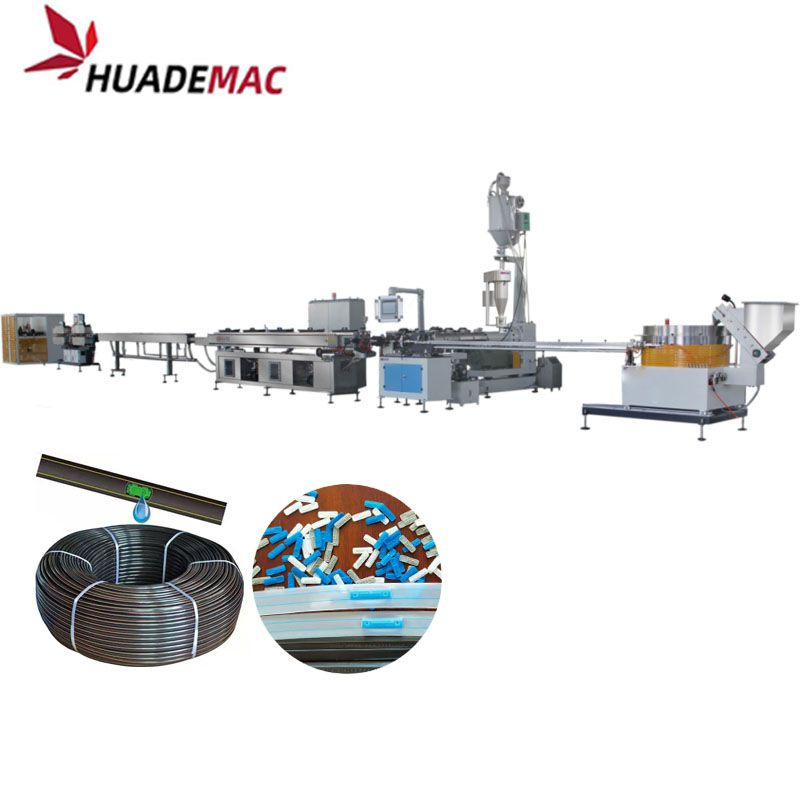

PE Flat Drip Irrigation Tape Production Machine
Produce polyethylene drip irrigation tape with flat dripper inserts.
Inquire about this product Prepare a detailed project brief
Equipment overview
Agriculture FLAT Drip Irrigation Tube Extrusion
Farm Drip Tape Pipe Production Machine
Flat Dripper Irrigation Pipe Production Machine/Extrusion Machine
Drip Irrigation Pipe Machine with Flat Dripper High Speed
It's used to produce flat type drip irrigation tapes, which are widely used to grow field crops (such as cotton), fruits, vegetables, trees, flowers and more.
DRIPPER SORTING SYSTEM Most advanced detecting technologies are applied,such as nanoscale laser identifying device and dripper anti-direction rejecting device, ensuring drippers in production are 100% qualified. Dripper Sorting Speed:1100pcs/min HAUL-OFF MACHINE & PUNCHING MACHINE The two-stages haul-off machine of this drip irrigation pipe machine adopted servo control, and the haul-off speed can be synchronously adjusted according to the production requirement, with stable and reliable pulling, low noise. PUNCHING MACHINE This drip irrigation pipe machine is equipped with online blind-hole detecting system, once the system detects the not-punched pipe, it will cut off the pipe automatically, meanwhile change over the coiling work position, and report the waste pipe conditions on time. AUTOMATIC WINDING MACHINE Automatic winding machine is driven by servo motor and controlled by SIEMENS PLC system. Application of servo traversing and tension control system in this flat drip irrigation tape line, can ensure the high sync condition of winding speed and line speed, making winded coils even and neat. During production, the winder can cut pipes and change reels automatically according to the setting length.
Technical specifications
Reference configurations from the product catalogue. Confirm output, dimensions and equipment selection for your material and project.
| Tape Diameter | Wall Thickness | Speed | Dripper Distance | Roll Length |
|---|---|---|---|---|
| Φ12mm Φ16mmΦ20mm | 0.2-0.4mm | 80~120m/min | 100-1500mm | 500-2500m |
Detailed Images
Flat Dripper Inserts

Equipment video
Ask about this machine
PE Flat Drip Irrigation Tape Production Machine